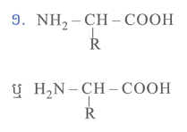
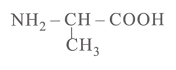
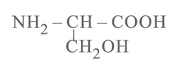
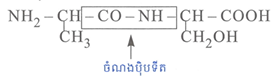

III.
សំណួរអាស៊ីតអាមីណេ៖
១. ចូរសរសេររូបមន្តទូទៅរបស់អាស៊ីតអាមីណេ។
២. រ៉ាឌីកាល់ R របស់អាស៊ីតអាមីណេប្រភេទអាឡានីនគឺ \(-\text{CH}_3\)
និងរ៉ាឌីកាល់ R របស់អាស៊ីតអាមីណេប្រភេទសេរីនគឺ
\(-\text{CH}_2\text{OH}\)។ ចូរសរសេររូបមន្តគីមីនៃអាស៊ីតអាមីណេទាំងពីរ។
៣. ចូរសរសេររូបមន្តឌីប៉ិបទីតដែលកើតពីអាស៊ីតអាមីណេទាំងពីរនេះ។
VI.
សែនមួយមានផលបូកនុយក្លេអូទីតប្រភេទ \( A \) និង \( T \) ស្មើនឹង \(
25\% \) នៃនុយក្លេអូទីតទាំងអស់ ហើយមានចំនួនសម្ព័ន្ធអ៊ីដ្រូសែនសរុប \(
1287 \)។
១. គណនាចំនួននុយក្លេអូទីតប្រភេទនីមួយៗរបស់សែន។
២. រកចំនួនសម្ព័ន្ធអ៊ីដ្រូសែនរវាង \( G \) និង \( C \) និងរវាង \( T \)
និង \( A \)。
VII.
សែនមួយមាននុយក្លេអូទីតសរុប \( 14400 \)。
១. រកប្រវែងរបស់សែន គិតជាមីក្រូម៉ែត្រ (\(\mu\text{m}\))។
២. គណនាចំនួនអាស៊ីតអាមីណេនៅក្នុងម៉ូលេគុលប្រូតេអ៊ីន ដែលសំយោគចេញពីសែននេះ។
៣. គណនាល្បឿនរបស់រីបូសូម បើដឹងថារីបូសូមបំលាស់ទីពីដើមម៉ូលេគុល ARNm
រហូតដល់ចុងម៉ូលេគុលប្រើរយៈពេល \( 80 \) នាទី។
ចម្លើយ សំណួរទី I
-ផ្នែកសំខាន់ៗនៃប្រព័ន្ធប្រសាទសត្វឆ្អឹងកងមានពីរផ្នែកធំៗគឺ
មជ្ឈមណ្ឌលប្រព័ន្ធប្រសាទ និងបរិមណ្ឌលប្រព័ន្ធប្រសាទ៖
-
មជ្ឈមណ្ឌលប្រព័ន្ធប្រសាទ មានខួរក្បាល
និងខួរឆ្អឹងខ្នង។
-
បរិមណ្ឌលប្រព័ន្ធប្រសាទ៖ មានសរសៃប្រសាទវិញ្ញាណនាំ
និងសរសៃប្រសាទចលករ។
ចម្លើយ សំណួរទី II
ពន្លកដឹងរសជាតិ
គឺជាធ្មួលវិញ្ញាណគីមីដែលរួសនឹងរសជាតិ ឬធ្មួលទទួលវិញ្ញាណរសជាតិ ។
ទីតាំងនៃរសជាតិទាំង ៖
- រសជាតិផ្អែម ស្ថិតនៅផ្នែកចុងអណ្ដាត។
-
រសជាតិប្រៃ ស្ថិតនៅផ្នែកចំហៀងសងខាង (ផ្នែកខាងមុខ)។
-
រសជាតិជូរ ស្ថិតនៅផ្នែកចំហៀងសងខាង
(ផ្នែកខាងក្រោយបន្ទាប់ពីរសជាតិប្រៃ)។
- រសជាតិល្វីង ស្ថិតនៅគល់អណ្ដាត។
ចម្លើយ សំណួរទី III
១. រូបមន្តទូទៅរបស់អាស៊ីតអាមីណេ៖

២. រូបមន្តគីមីនៃអាស៊ីតអាមីណេទាំងពីរ៖
- អាស៊ីតអាមីណេ អាឡានីន ៖

- អាស៊ីតអាមីណេ សេរីន ៖

៣. រូបមន្តគីមីនៃឌីប៉ិបទីត ៖

ចម្លើយ សំណួរទី IV
ផូស៊ីល (Fossils)៖ គឺជាស្នាម
ឬសំណល់ជីវិតរបស់ភាវរស់ដែលបានស្លាប់
និងបន្សល់ទុកក្នុងស្រទាប់ផែនដីតាំងពីសម័យយូរលង់មកហើយ។
ដំណើរកកើតផូស៊ីលមាន ៣ របៀប៖
-
១. ដំណើរក្លាយជាថ្ម ៖
សំណល់ភាវរស់ខ្លះកប់ជាប់ក្នុងកម្ទេចកំណប្លែងថ្ម ។
-
២. ពុម្ពក្រៅ និងពុម្ពក្នុង ៖
-
ពុម្ពក្រៅ
ពេលដែលសរីរាង្គកប់ក្នុងកម្ទេចកំណត្រូវបានរលាយបាត់បន្តិចម្ដងៗ
ហើយបន្សល់ទុកពុម្ភទទេ។
-
ពុម្ពក្នុង ទឹកហូរនាំកម្ទេចកំណមកបំពេញពុម្ភទទេនោះ
បង្កើតបានជាពុម្ពក្នុង ដែលបម្លែងជាសិលាទ្រង់ទ្រាយដូចសារពាង្គកាយ ។
-
៣. ការបន្សល់ទុកសារពាង្គនៅទាំងមូល ៖
កប់ក្នុងជ័ររុក្ចជាតិ ឬទឹកកក
ចម្លើយ សំណួរទី V
បានជាគេចាត់ទុកបែបនេះព្រោះ វាជាក្រពេញផលិតអរម៉ូន
ហើយបញ្ចេញទៅក្នុងចរន្តឈាមដោយផ្ទាល់៖
- ក្រពះផលិតអរម៉ូនកាស្ទ្រីន
- ពោះវៀនតូចផលិតអរម៉ូនសេក្រេទីន ។
ចម្លើយ សំណួរទី VI
១. គណនាចំនួននុយក្លេអូទីតប្រភេទនីមួយៗរបស់សែន៖
តាមបម្រាប់៖ \( \%A + \%T = 25\% \) និងសម្ព័ន្ធអ៊ីដ្រូសែន \( L_H =
1287 \)
តាមគោលការណ៍បំពេញបាស A-T , C-G នាំឱ្យ A = T , C = G
គេបាន \( \%A + \%T = 25\% \)
\( \implies 2\%T = 25\% = 12.5\%\)
\( \implies \%T = 12.5\%\)
\( \implies \%T = \%A = 12.5\% \)
ដោយ \( \%A + \%C = 50\% \implies \%C = \%G = 50\% - 12.5\% = 37.5\%
\)
តាមការចងសម្ព័នអ៊ីដ្រូសែន
A ភ្ជាប់ជាមួយ T ដោយសម្ព័ន្ធអ៊ីដ្រូសែនចំនួន ២
C ភ្ជាប់ជាមួយ G ដោយសម្ព័ន្ធអ៊ីដ្រូសែនចំនួន ៣
នាំឱ្យ ៖ \( L_H = 2A + 3C \)
\( \implies 1287 = 2( \frac{12.5M}{100}) + 3( \frac{37.5M}{100} )
\)
\( \implies \frac{137.5M}{100} = 1287 \)
\( \implies 137.5M = 128,700 \)
\( \implies M = \frac{128,700}{137.5} = 936 \) នុយក្លេអូទីត
នាំឲ្យ \( A = T = \frac{12.5M}{100} \) = \( \frac{12.5 \times
936}{100} = 117 \) នុយក្លេអូទីត
នាំឲ្យ \( C = G = \frac{37.5M}{100} = \frac{37.5 \times 936}{100} =
351 \) នុយក្លេអូទីត
ដូចនេះ៖ \( A = T = 117 \) នុយក្លេអូទីត និង \( C = G = 351 \)
នុយក្លេអូទីត ។
២. រកចំនួនសម្ព័ន្ធអ៊ីដ្រូសែនរវាង \( G \) និង \( C \) និងរវាង \( T
\) និង \( A \)៖
- \( A \) ភ្ជាប់ \( T \) ដោយសម្ព័ន្ធអុីដ្រូសែនចំនួន ២
\(\implies L_{A-T} = 2A \)
\(\implies L_{A-T} = 2 \times 117 = 234 \) សម្ព័ន្ធអ៊ីដ្រូសែន
- \( C \) ភ្ជាប់ \( G \) ដោយសម្ព័ន្ធអុីដ្រូសែនចំនួន ៣
\(\implies L_{C-G} = 3C \)
\(\implies L_{C-G} = 3 \times 351 = 1053 \) សម្ព័ន្ធអ៊ីដ្រូសែន
ដូចនេះ៖ សម្ព័ន្ធអ៊ីដ្រូសែនរវាង \( A \) និង \( T \) គឺ \( 234 \)
សម្ព័ន្ធអ៊ីដ្រូសែន និងរវាង \( C \) និង \( G \) គឺ \( 1053
\)សម្ព័ន្ធអ៊ីដ្រូសែន ។
ចម្លើយ សំណួរទី VII
១. រកប្រវែងរបស់សែន គិតជាមីក្រូម៉ែត្រ (\(\mu\text{m}\))៖
តាមបម្រាប់ ៖ សែនមានចំនួននុយក្លេអូទីតសរុប \( M = 14400 \)
នុយក្លេអូទីត
ដោយពីនុយក្លេអូទីតមួយទៅនុយក្លេអូទីតមួយទៀតមានប្រវែង 0.34 nm
នាំឲ្យ \( l_{សែន} = \frac{M}{2} \times 0.34 \text{ nm} \)
គេបាន\( l = \frac{14400}{2} \times 0.34 = 7200 \times 0.34 = 2448
\text{ nm} \)
ដោយ \( 1 \text{ nm} = 10^{-3} \mu\text{m} \)
\( \implies l = 2448 \times 10^{-3} = 2.448 \mu\text{m} \) (ឬ \( 2448
\times 10^{-3} \mu\text{m} \))
ដូចនេះ៖ ប្រវែងសែនគឺ \( l = 2.448 \mu\text{m} \)
២. គណនាចំនួនអាស៊ីតអាមីណេ
នៅលើច្រវ៉ាក់ម្ខាងរបស់សែន មានត្រីធាតុ ១(៣នុយក្លេអូទីត)
ជាក្រមកំណត់អាសុីតអាមីនេ ១។ ត្រីធាតុ ១
ត្រូវនឹងកូដុងផ្ដើមកំណត់មេត្យូនីន
ហើយផ្តាច់ចេញត្រីធាតុមួយទៀតត្រូវនឹងកូដុងស្ដុបមិនកំណត់អាសុីតអាមីណេទេ
នាំឲ្យ ចំនួនអាស៊ីតអាមីណេ \( = \frac{M}{6} - 2 \)
គេបាន ចំនួនអាសុីតអាមីនេ \( = \frac{14400}{6} - 2 = 2400 - 2 = 2398
\) អាស៊ីតអាមីណេ
ដូចនេះ៖ ចំនួនអាស៊ីតអាមីណេក្នុងប្រូតេអ៊ីនគឺ \( 2398 \)អាសុីតអាមីណេ ។
៣. គណនាល្បឿនរបស់រីបូសូម៖
តាមបម្រាប់៖ \( t = 80 \) នាទី
តាម ៖ \( V = \frac{l_{\text{ARN_m}}}{t} \)
ដោយម៉ូលេគុល ARM_mសំយោគចេញពីសែន
នាំឲ្យ \( l_{\text{ARN_m}} = l_{\text{សែន}} = 2448 \text{ nm} \)
រូបមន្តល្បឿនបំលាស់ទី៖ \( V = \frac{l_{\text{mRNA}}}{t} \)
\( \implies V = \frac{2448 }{80 } = 30.6 \) nm/នាទី
ដូចនេះ៖ ល្បឿនរីបូសូមគឺ \( V = 30.6 \) nm/នាទី ឬ \( 0.51 \)nm/វិនាទី
។